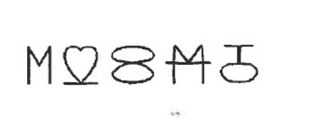
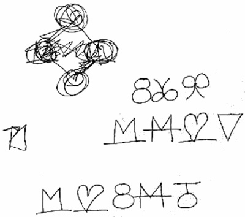

CAPITULO 4
EL ENIGMA DEL HUMOR MATEMATICO

Muchos de los guionistas matematicos de los simpson tienen mucho interes por sus pasatiempos.
En varios capitulo de los simpson hacen mencion del cubo de rubik.
Burns establecio ciertos paralelismos esntre pasatiempos y chistes y penso que tenian mucho en comun.
Los mejores pasatiempos, bromas te hacen pensar y sonreir, y quizas ese sea el motivo que los matematicos hayan sido una aportacion muy valiosa a los simpson.
Existe un hilo comun creativo ya que en uno trata de resolver problemas y en el otro desarrollar una historia.
Cuando piensan en una broma sacandola de la nada no tiene ninguna garantia de que exista la broma y cumpla con todo lo que necesita.
Al crear una broma matematica requieren comprender las matematicas y requieren comprencion. Ya que los bromas matematicas prueban tus conocimientos matematicos.
